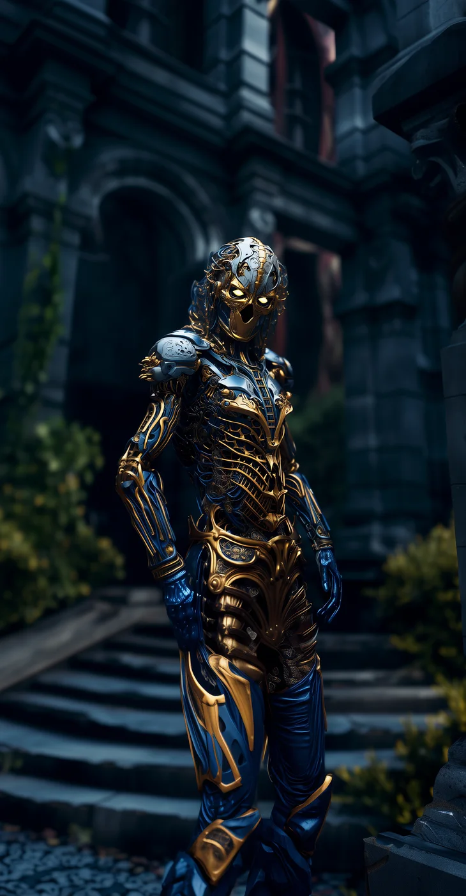

©
©

Drak
Grim Corsair · Legion
Drak never leaves a crewmate behind, which makes Drak a rare thing among the Grim Corsairs. Phase Out strikes two enemies from beyond perception and helps an ally return to the fight sooner. The Corsairs mock Drak for it, but every crew wants Drak aboard.